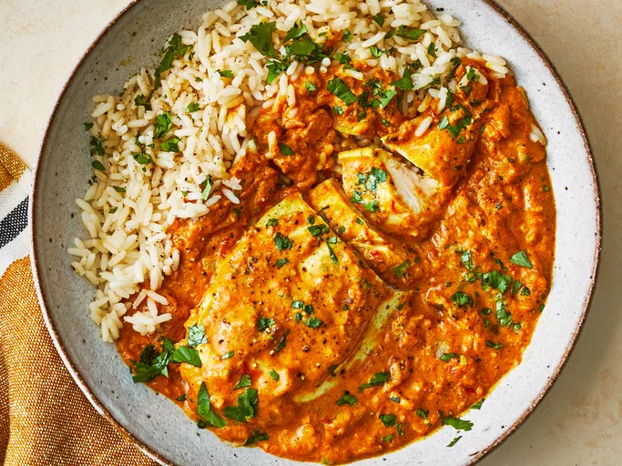
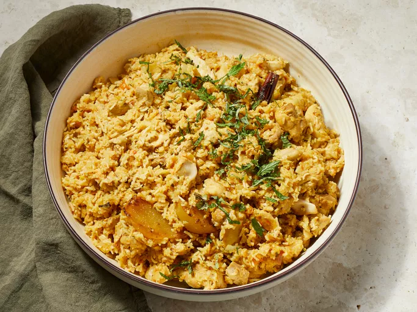

Odin Recipes

Welcome to Odin Recipes
Where Every Bite Tells a Mythical Tale!

Indian Chicken Curry (Murgh Kari)
Indian Chicken Curry, also known as Murgh Kari, is a popular and flavorful dish that originates from the diverse culinary traditions of India. This dish is a perfect blend of aromatic spices, tender chicken, and a rich, creamy sauce that is sure to tantalize your taste buds. To prepare Indian Chicken Curry, chicken pieces are marinated in a mixture of yogurt and spices such as turmeric, cumin, coriander, and garam masala. The marinated chicken is then cooked with onions, garlic, ginger, tomatoes, and a variety of spices like cumin seeds, cardamom, and cinnamon. Coconut milk or cream is often added to create a creamy texture. The key to a delicious Indian Chicken Curry lies in the slow cooking process, allowing the flavors to meld together and the chicken to become tender. This dish is typically served with steamed rice, naan bread, or roti, making it a satisfying and comforting meal. Indian Chicken Curry is not only a favorite in Indian households but has also gained popularity worldwide for its rich and complex flavors. Whether you are a fan of spicy food or prefer milder dishes, Indian Chicken Curry can be customized to suit your taste preferences Read more.Shrimp Biryani
Shrimp Biryani is a delectable and aromatic dish that combines the succulent flavors of shrimp with fragrant basmati rice and a blend of spices. This dish is a popular variation of the traditional biryani, a classic Indian rice dish known for its rich and complex flavors. To prepare Shrimp Biryani, shrimp is marinated in a mixture of yogurt, ginger, garlic, and spices such as turmeric, cumin, coriander, and garam masala. The marinated shrimp is then cooked with onions, tomatoes, and a special biryani spice mix that typically includes cinnamon, cardamom, cloves, and bay leaves. Meanwhile, basmati rice is parboiled and layered with the cooked shrimp masala in a large pot. The layers are then steamed together to allow the flavors to meld and the rice to absorb the aromatic spices, resulting in a flavorful and fragrant one-pot meal. Shrimp Biryani is often garnished with fried onions, fresh cilantro, and mint leaves to add a burst of freshness and texture. This dish is typically served with raita (yogurt sauce), pickle, and papadum, making it a complete and satisfying meal that is perfect for special occasions or gatherings Read more.
